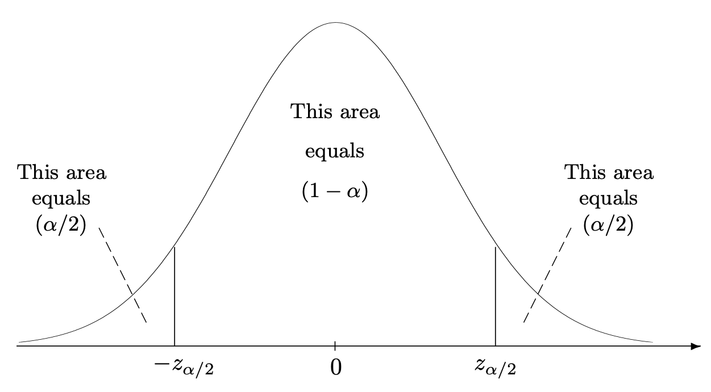
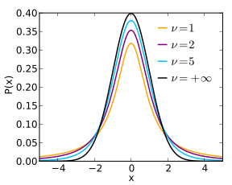
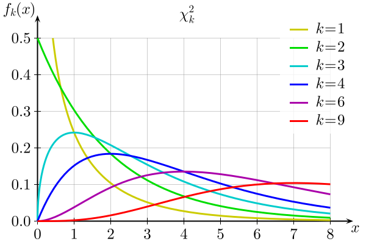
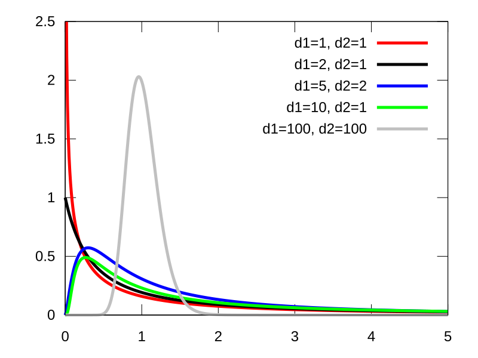

Xiaojing Ye
Department of Mathematics and Statistics
Georgia State University
Let \(p\) be a pmf/pdf with parameters \(\theta\). We call \(X_1,\dots,X_n \stackrel{\text{iid}}{\sim} p\) a sample of \(p\). - How to estimate \(\theta\) given the sample? - How accurate is the estimate?
For example:
We will first introduce two methods to estimate parameters. Then we consider the estimation errors.
Definition. The \(k\)-th moment of a distribution is \[ \mu_k = \mathbb{E}(X^k) \]
Definition. The \(k\)-th central moment of a distribution is \[ \mu_k = \mathbb{E}\Bigl((X-\mu)^2\Bigr) \] where \(\mu = \mathbb{E}(X)\).
Let \(X_1,\dots,X_n \stackrel{\text{iid}}{\sim} p\), where \(p\) is a pmf or pdf.
Definition. The \(k\)-th sample moment of a distribution is \[ m_k = \frac{1}{n} \sum_{i=1}^{n} X_i^k \]
Definition. The \(k\)-th sample central moment of a distribution is \[ m_k' = \frac{1}{n} \sum_{i=1}^{n} (X_i-\overline{X})^k \] where \(\overline{X} = \frac{1}{n}\sum_{i=1}^{n} X_i\).
Suppose we have \(k\) parameters in \(\theta\), we set a system of \(k\) equations of \(\theta\): \[ \begin{cases} \mu_1 = m_1 \\ \mu_2 = m_2 \\ \quad \vdots \\ \mu_k = m_k \end{cases} \] and solve for \(\theta\).
Example. Suppose we have \(X_1,\dots,X_n \stackrel{\text{iid}}{\sim} \text{Poisson}(\lambda)\). Estimate \(\lambda\) using the method of moments.
Solution. We only have \(k=1\) parameter \(\lambda\). Just need to solve one equation \(\mu_1 = m_1\). As \[\mu_1 = \mathbb{E}(X) = \lambda , \qquad m_1 = \frac{1}{n}\sum_{i=1}^{n} X_i = \overline{X} , \] we have \[ \lambda = \overline{X} . \] Hence \(\overline{X}\) is the estimator of \(\lambda\).
Example. Suppose we have \(X_1,\dots,X_n \stackrel{\text{iid}}{\sim} \mathcal{N}(\mu, \sigma^2)\). Estimate \(\mu\) and \(\sigma^2\) using the method of moments.
Solution. Notice \[ \begin{aligned} \mu_1 = \mu , \qquad & m_1 = \overline{X}, \\ \mu_2 = \mu^2 + \sigma^2, \qquad & m_2 = \frac{1}{n}\sum_{i=1}^{n} X_i^2. \end{aligned} \] Solving \((\mu, \sigma^2)\) from \(\mu_1 = m_1\) and \(\mu_2 = m_2\), we find the estimators \[ \mu = \overline{X}, \qquad \sigma^2 = \frac{1}{n}\sum_{i=1}^{n} X_i^2 - \overline{X}^2 = \frac{1}{n}\sum_{i=1}^{n} (X_i - \overline{X})^2 . \]
Let \(X_1,\dots,X_n \stackrel{\text{iid}}{\sim} p_\theta\), where \(p_\theta\) is a pmf or pdf with parameter \(\theta\). Suppose \(x_1,\dots,x_n\) are their realizations (observed values).
The joint distribution of the sample is \[ \prod_{i=1}^{n} p_\theta(x_i) \] where \(x_i\) is the realization of \(X_i\).
Definition. The likelihood function of \(\theta\) is defined by \[ L(\theta) := \prod_{i=1}^{n} p_\theta(x_i) .\] Note that this is a function of \(\theta\) as \(x_i\)’s are known.
Definition. We call the maximizer of \(L(\theta)\): \[ \theta^* = \arg\max_{\theta} L(\theta) \] the maximum likelihood estimator of \(\theta\).
We usually take the (natural) logarithm of \(L\) to get the log-likelihood function: \[ l(\theta) := \ln L(\theta) = \sum_{i=1}^{n} \ln p_\theta(x_i) .\]
Notice the logarithm is a monotonic increasing function, so \(l\) has the same maximizer as \(L\).
It is almost always easier to maximize \(l\) than \(L\).
Example. Given a sample \(X_1,\dots,X_n \stackrel{\text{iid}}{\sim} \text{Poisson}(\lambda)\). Find the maximum likelihood estimator of \(\lambda\).
Solution. Recall the pmf of Poisson(\(\lambda\)) is \(p_\lambda(x) = \frac{\lambda^x e^{-x}}{x!} .\) The likelihood and log-likelihood functions are \[ \begin{aligned} L(\lambda) & = \prod_{i=1}^{n} p_\lambda (x_i) = \prod_{i=1}^{n} \frac{\lambda^{x_i} e^{-x_i}}{x_i!}, \\ l(\lambda) & = \ln L(\lambda) = \sum_{i=1}^{n} ( x_i \ln \lambda - \lambda - \ln(x_i!)) . \end{aligned} \]
Solution (cont) To find the maximizer of \(l(\lambda)\), we solve \[ l'(\lambda) = \sum_{i=1}^{n} \Bigl( \frac{x_i}{\lambda} - 1) = 0 \] for \(\lambda\), and get the solution \[ \lambda = \frac{1}{n}\sum_{i=1}^{n} X_i = \overline{X}. \] Hence \(\overline{X}\) is the maximum likelihood estimator of \(\lambda\).
Given a sample \(X_1,\dots,X_n \stackrel{\text{iid}}{\sim} \mathcal{N}(\mu, \sigma^2)\). Find the maximum likelihood estimator of \(\mu\) and \(\sigma^2\).
Recall the pdf of \(\mathcal{N}(\mu,\sigma^2)\) is \(p_{\mu,\sigma^2}(x) = \frac{1}{\sqrt{2 \pi \sigma^2}} e^{- \frac{|x-\mu|^2}{2\sigma^2}}.\) The likelihood and log-likelihood functions are \[ \begin{aligned} L(\mu,\sigma^2) & = \prod_{i=1}^{n} p_{\mu,\sigma^2} (x_i) = \prod_{i=1}^{n} \frac{1}{\sqrt{2 \pi \sigma^2}} e^{- \frac{|x_i-\mu|^2}{2\sigma^2}}, \\ l(\mu,\sigma^2) & = \ln L(\lambda) = \sum_{i=1}^{n} \Bigl( - \frac{(x_i - \mu)^2}{2\sigma^2} - \frac{1}{2} \ln (2\pi\sigma^2) \Bigr) . \end{aligned} \]
To find the maximizer of \(l(\mu, \sigma^2)\), we solve \[ \begin{aligned} \partial_\mu l(\mu, \sigma^2) & = \sum_{i=1}^{n} \frac{x_i - \mu}{\sigma^2} = 0, \\ \partial_{\sigma^2}l(\mu,\sigma^2) & = \sum_{i=1}^{n} \Bigl( \frac{(x_i - \mu)^2}{2\sigma^4} - \frac{1}{2\sigma^2} \Bigr) = 0 \end{aligned} \] for \(\mu, \sigma^2\), and get the solution \[ \mu = \frac{1}{n}\sum_{i=1}^{n} X_i = \overline{X}, \qquad \sigma^2 = \frac{1}{n}\sum_{i=1}^{n} (X_i - \overline{X})^2 . \] Hence \(\overline{X}\) and \(\frac{1}{n}\sum_{i=1}^{n} (X_i - \overline{X})^2\) are respectively the maximum likelihood estimators of \(\mu\) and \(\sigma^2\).
Given a sample \(X_1,\dots,X_n \stackrel{\text{iid}}{\sim} \text{Uniform}(0,b)\). Estimate \(b\) using the method of moments and the method of maximum likelihood.
We first consider the method of moments: since \(\mu_1 = \frac{b}{2}\) and \(m_1 = \overline{X}\), we get \[ b_{\text{MoM}} = 2\overline{X} . \]
Next consider the method of maximum likelihood: the likelihood function is \[ L(b) = \prod_{i=1}^{n} \frac{1}{b} = \frac{1}{b^n}, \qquad \text{where} \quad 0 \le X_1,\dots,X_n \le b .\] In other words, we want to maximize \(L(b)\) subject to \(b \ge \max(X_1,\dots,X_n)\). Clearly, the maximizer is \[ b_{\text{MLE}} = \max(X_1,\dots, X_n) .\]
We see \(b_{\text{MoM}}\) and \(b_{\text{MLE}}\) are different.
How accurate are the estimators (obtained by MoM and MLE)?
Find the variance of the estimator, and substitute the unknowns by their estimates.
Given a sample \(X_1,\dots,X_n \stackrel{\text{iid}}{\sim} \text{Poisson}(\lambda)\). Find the standard error of the MoM estimate of \(\lambda\).
Both mean and variance of Poisson\((\lambda)\) are \(\lambda\). Recall the MoM estimator of \(\lambda\) is \(\overline{X}\). Hence \[ \begin{aligned} \text{Var}(\overline{X}) & = \text{Var}\Bigl( \frac{1}{n}\sum_{i=1}^{n} X_i \Bigr) = \frac{1}{n^2} \text{Var}\Bigl( \sum_{i=1}^{n} X_i \Bigr) \\ & = \frac{1}{n^2} \cdot n \lambda = \frac{\lambda}{n} \approx \frac{\overline{X}}{n}. \end{aligned} \]
Alternatively, we can use the unbiased estimator of \(\text{Var}(X_i) = \frac{1}{n-1}\sum_{i=1}^{n} (X_i - \overline{X})^2\) and replace the second line above with \[ \text{Var}(\overline{X}) = \frac{1}{n^2} \cdot n \text{Var}(X_i) = \frac{1}{n(n-1)} \sum_{i=1}^{n} (X_i - \overline{X})^2 . \]
We see these two solutions are different, but they are both valid estimates of \(\text{Var}(\overline{X})\).
In statistics, instead of standard error of an estimator, it is more common to construct a confidence interval (CI) of the parameter to be estimated.
Definition. Let \(\alpha \in (0,1)\). An interval \([a,b]\) is called a \((1-\alpha)100\%\) confidence interval (CI) of \(\theta\) if \[ P(a \le \theta \le b) = 1- \alpha . \]
Note that \([a,b]\) is determined by \(\alpha\) and \(\hat{\theta}\).
If
then \[ Z = \frac{\hat{\theta} - \theta}{\sigma(\hat{\theta})} \sim \mathcal{N}(0,1) . \]
Note that \(z_{\alpha/2}\) is the value such that \(\int_{z_{\alpha/2}}^{\infty} p(z) dz = \frac{\alpha}{2}\), where \(p\) is the pdf of \(\mathcal{N}(0,1)\).

Consequently, there is \[ P\Bigl( -z_{\alpha/2} \le Z \le z_{\alpha/2} \Bigr) = 1 - \alpha . \]
Substitute \(Z = \frac{\hat{\theta} - \theta}{\sigma(\hat{\theta})}\) into above, we find \[ P\Bigl( \hat{\theta} -z_{\alpha/2} \sigma(\hat{\theta}) \le \theta \le \hat{\theta} + z_{\alpha/2} \sigma(\hat{\theta}) \Bigr) = 1 - \alpha . \]
So the \((1-\alpha)100\%\) CI of \(\theta\) is \[ \Bigl[ \hat{\theta} -z_{\alpha/2} \sigma(\hat{\theta}), \quad \hat{\theta} + z_{\alpha/2} \sigma(\hat{\theta}) \Bigr] . \]
The CI is often written as \[ \hat{\theta} \pm z_{\alpha/2} \sigma(\hat{\theta}) \]
| Case | \(\qquad\qquad\) 1 | \(\qquad\qquad\qquad\) 2 |
|---|---|---|
| A | CI of \(\mu\). Any \(p\), known \(\sigma^2\). | CI of \(\mu_X - \mu_Y\). Any \(p_X,p_Y\), known \(\sigma_X^2,\sigma_Y^2\). |
| B | CI of \(\mu\). Any \(p\), unknown \(\sigma^2\), large \(n\). | CI of \(\mu_X - \mu_Y\). Any \(p_X,p_Y\), unknown \(\sigma_X^2,\sigma_Y^2\), large \(n,m\). |
| C | CI of \(\mu\). Gaussian \(p\), unknown \(\sigma^2\), small \(n\). | CI of \(\mu_X - \mu_Y\). Gaussian \(p_X, p_Y\), unknown \(\sigma_X^2,\sigma_Y^2\), small \(n,m\). |
| D | CI of \(\sigma^2\). Gaussian \(p\). | CI of \(\sigma_X^2/\sigma_Y^2\). Gaussian \(p_X,p_Y\). |
Let \(X_1,\dots,X_n \stackrel{\text{iid}}{\sim} p\) with unknown mean \(\mu\) but known \(\sigma^2\). Now we construct the CI of \(\mu\).
We choose \(\hat{\mu}=\overline{X}\) as the estimator of \(\mu\). Note that
As \(\frac{\overline{X} - \mu}{\sigma/\sqrt{n}} \sim \mathcal{N}(0,1),\) there is \[ P\Bigl( - z_{\alpha/2} \le \frac{\overline{X} - \mu}{\sigma/\sqrt{n}} \le z_{\alpha/2} \Bigr) = 1-\alpha . \] Namely \[ P\Bigl( \overline{X} - z_{\alpha/2} \frac{\sigma}{\sqrt{n}} \le \mu \le \overline{X} + z_{\alpha/2} \frac{\sigma}{\sqrt{n}} \Big) = 1-\alpha .\] So the \((1-\alpha)100\%\) CI of \(\mu\) is \[ \overline{X} \pm z_{\alpha/2} \frac{\sigma}{\sqrt{n}}. \]
Suppose we have a sample \[ 2.5, \ 8.4, \ 8.0, \ 4.5, \ 7.4, \ 9.2 \] from a normal distribution with \(\sigma = 2.2\). Find the 95% CI of the mean \(\mu\).
The confidence level is \(\alpha = 0.05\) and hence \(z_{\alpha/2} = z_{0.025} = 1.96\). The sample mean is \(\overline{X} = 6.5\) and sample size is \(n=6\). Hence the 95% CI of \(\mu\) is \[ \overline{X} \pm z_{0.025} \frac{\sigma}{\sqrt{n}} = 6.5 \pm 1.96 \cdot \frac{2.2}{\sqrt{6}}. \]
In the case above, how large \(n\) needs to be if we want sufficiently small margin \(\Delta\)?
In other words, we need \[ z_{\alpha/2} \frac{\sigma}{\sqrt{n}} \le \Delta . \] Solving for \(n\), we find \[ n \ge \Bigl( \frac{z_{\alpha/2} \sigma}{\Delta} \Bigr)^2 .\] Round \(n\) up if the right-hand-side is non-integer.
Let \(X_1,\dots,X_n \stackrel{\text{iid}}{\sim} p_X\) with unknown mean \(\mu_X\) but known variance \(\sigma_X^2\), and independently \(Y_1,\dots,Y_m \stackrel{\text{iid}}{\sim} p_Y\) with unknown mean \(\mu_Y\) but known variance \(\sigma_Y^2\). Now we construct the CI of \(\mu_X - \mu_Y\).
We choose \(\overline{X}\) and \(\overline{Y}\) as the estimators of \(\mu_X\) and \(\mu_Y\), respectively. Note that
Hence \(\overline{X} - \overline{Y} \sim \mathcal{N}\Bigl(\mu_X - \mu_Y , \frac{\sigma_X^2}{n} + \frac{\sigma_Y^2}{m}\Bigr)\) and there is
\[ P\Bigl( - z_{\alpha/2} \le \frac{(\overline{X} - \overline{Y}) - (\mu_X - \mu_Y)}{\sqrt{\frac{\sigma_X^2}{n} + \frac{\sigma_Y^2}{m}}} \le z_{\alpha/2} \Bigr) = 1-\alpha . \] Namely \[ P\biggl( (\overline{X}-\overline{Y}) - z_{\alpha/2} \sqrt{\frac{\sigma_X^2}{n} + \frac{\sigma_Y^2}{m}} \le \mu_X - \mu_Y \le (\overline{X} - \overline{Y}) + z_{\alpha/2} \sqrt{\frac{\sigma_X^2}{n} + \frac{\sigma_Y^2}{m}} \biggr) = 1-\alpha .\] So the \((1-\alpha)100\%\) CI of \((\mu_X - \mu_Y)\) is \[ (\overline{X}-\overline{Y}) \pm z_{\alpha/2} \sqrt{\frac{\sigma_X^2}{n} + \frac{\sigma_Y^2}{m}}. \]
Let \(X_1,\dots,X_n \stackrel{\text{iid}}{\sim} p\) with unknown mean \(\mu\) and variance \(\sigma^2\) but large \(n\).
Note that
We can approximate \(\sigma^2\) by \(s^2 = \frac{1}{n-1}\sum_{i=1}^{n} (X_i-\overline{X})^2\) (or \(\frac{1}{n}\sum_{i=1}^{n} (X_i - \overline{X})^2\)), and find the \((1-\alpha)100\%\) CI of \(\mu\) as \[ \overline{X} \pm z_{\alpha/2} \frac{s}{\sqrt{n}}. \]
Example. Let \(X_1,\dots,X_n \stackrel{\text{iid}}{\sim} \text{Binomial}(p)\) where \(n \ge 30\). Find the \((1-\alpha)100\%\) CI of \(p\).
Solution. Recall the mean and variance of Binomial(\(p\)) are \(p\) and \(p(1-p)\), respectively.
We know \(\mathbb{E}(\overline{X}) = p\) and by CLT that \(\overline{X} \sim \mathcal{N}(p, \frac{p(1-p)}{n})\). Furthermore, we approximate the variance \(p(1-p)\) by \[ \frac{1}{n}\sum_{i=1}^{n} (X_i - \overline{X})^2 = \cdots = \overline{X} ( 1- \overline{X}) . \quad \text{(Hint: $X_i$ is 1 or 0, so $X_i^2 = X_i$).}\] Then the \((1-\alpha)100\%\) CI of \(p\) is \[ \overline{X} \pm z_{\alpha/2} \sqrt{\frac{\overline{X}(1-\overline{X})}{n}} . \]
Let \(X_1,\dots,X_n \stackrel{\text{iid}}{\sim} p_X\) with unknown mean \(\mu_X\) and variance \(\sigma_X^2\), and independently \(Y_1,\dots,Y_m \stackrel{\text{iid}}{\sim} p_Y\) with unknown mean \(\mu_Y\) and variance \(\sigma_Y^2\). Now we construct the CI of \(\mu_X - \mu_Y\).
We choose \(\overline{X}\) and \(\overline{Y}\) as the estimators of \(\mu_X\) and \(\mu_Y\), respectively. Note that
We can approximate \(\sigma_X^2\) and \(\sigma_Y^2\) by their sample variances, and construct the CI of \(\mu_X - \mu_Y\) similarly.
Example. Let \(X_1,\dots,X_n \stackrel{\text{iid}}{\sim} \text{Binomial}(p_X)\) and \(Y_1,\dots,Y_m \stackrel{\text{iid}}{\sim} \text{Binomial}(p_Y)\) independently, where \(n,m \ge 30\). Find the \((1-\alpha)100\%\) CI of \(p_X - p_Y\).
Solution. We know \(\mathbb{E}(\overline{X}) = p_X\) and \(\mathbb{E}(\overline{Y}) = p_Y\), and by CLT that \[\overline{X} \sim \mathcal{N} \Bigl(p_X, \frac{p_X(1-p_X)}{n} \Bigr) \quad \text{and} \quad \overline{Y} \sim \mathcal{N} \Bigl(p_Y, \frac{p_Y(1-p_Y)}{m}\Bigr)\] We approximate the variances \(p_X(1-p_X)\) by \[ \frac{1}{n}\sum_{i=1}^{n} (X_i - \overline{X})^2 = \cdots = \overline{X} ( 1- \overline{X}) .\] Similar for \(p_Y(1-p_Y)\). Then the \((1-\alpha)100\%\) CI of (\(p_X - p_Y\)) is \[ (\overline{X} - \overline{Y}) \pm z_{\alpha/2} \sqrt{\frac{\overline{X}(1-\overline{X})}{n} + \frac{\overline{Y}(1-\overline{Y})}{m}} . \]
Let \(X_1,\dots,X_n \stackrel{\text{iid}}{\sim} \mathcal{N}(\mu,\sigma^2)\) with unknown \(\mu\) and \(\sigma^2\) and small \(n\) (e.g., \(n<30\)).
We can approximate \(\sigma^2\) by its unbiased estimator \[s^2 = \frac{1}{n-1}\sum_{i=1}^{n} (X_i-\overline{X})^2\] but \(n\) is small so \(s^2\) is not accurate.
In such case, \(\frac{\overline{X} - \mu}{s/\sqrt{n}}\) no longer follows \(\mathcal{N}(0,1)\)!
Instead, \(\frac{\overline{X} - \mu}{s/\sqrt{n}}\) follows the Student’s \(t\) distribution with degrees of freedom \(n-1\).
Definition. Suppose \(Z \sim \mathcal{N}(0,1)\) and \(V \sim \chi_{\nu}^2\) are independent, then \[ t = \frac{Z}{\sqrt{V/\nu}} \] is said to follow the Student’s \(t\) distribution with degrees of freedom \(\nu\), denoted by \(t \sim t_{\nu}\).

The pdf of \(t_{\nu}\) is (no need to memorize) \[ p(t) = \frac{1}{\sqrt{\nu} \text{B}(\frac{1}{2},\frac{1}{\nu})} \Bigl( 1 + \frac{t^2}{\nu} \Bigr)^{-(\nu+1)/2} \] for every \(t \in \mathbb{R}\), where B is the pdf of Beta distribution.
Let \(X_1,\dots,X_n \stackrel{\text{iid}}{\sim} \mathcal{N}(\mu,\sigma^2)\) with unknown \(\mu\) and \(\sigma^2\), and \(n\) is small. Denote \[s^2 = \frac{1}{n-1}\sum_{i=1}^{n} (X_i-\overline{X})^2 . \] Then \[ \frac{\overline{X} - \mu}{s/\sqrt{n}} \sim t_{n-1} . \]
We rewrite \[ \frac{\overline{X} - \mu}{s/\sqrt{n}} = \frac{\frac{\overline{X} - \mu}{\sigma/\sqrt{n}}}{\frac{s/\sqrt{n}}{\sigma/\sqrt{n}}} = \frac{\frac{\overline{X} - \mu}{\sigma/\sqrt{n}}}{\frac{s}{\sigma}} = \frac{\frac{\overline{X} - \mu}{\sigma/\sqrt{n}}}{\sqrt{\frac{(n-1)s^2}{\sigma^2}/ (n-1)}} . \]
We just need show \[ \frac{\overline{X} - \mu}{\sigma/\sqrt{n}} \sim \mathcal{N}(0,1), \qquad \frac{(n-1)s^2}{\sigma^2} \sim \chi_{n-1}^2 \]
and these two are independent RVs.
By the proposition, we have \[ P\Bigl( - t_{\alpha/2, n-1} \le \frac{\overline{X} - \mu}{s/\sqrt{n}} \le t_{\alpha/2, n-1} \Bigr) = 1-\alpha , \]
or equivalently \[ P\Bigl( \overline{X} - t_{\alpha/2, n-1} \frac{s}{\sqrt{n}} \le \mu \le \overline{X} + t_{\alpha/2, n-1} \frac{s}{\sqrt{n}}\Bigr) = 1-\alpha . \]
Hence the \((1-\alpha)100\%\) CI of \(\mu\) is \[ \overline{X} \pm t_{\alpha/2,n-1} \frac{s}{\sqrt{n}} . \]
A Gaussian sample of size \(n=18\) has \(\overline{X} = 0.29\) and \(s^2 = 0.074^2\). Find the 95% CI of its mean \(\mu\).
Notice that \(\alpha = 0.05\) and \[ t_{\alpha/2,n-1} = t_{0.025,17} = 2.898 .\] Hence the 95% CI of \(\mu\) is \[ \overline{X} \pm t_{\alpha/2,n-1} \frac{s}{\sqrt{n}} = 0.29 \pm 2.898 \cdot \frac{0.074}{\sqrt{18}} = 0.29 \pm 0.05. \]
Let \(X_1,\dots,X_n \stackrel{\text{iid}}{\sim} p_X = \mathcal{N}(\mu_X,\sigma_X^2)\) with unknown mean \(\mu_X\) and variance \(\sigma_X^2\), and independently \(Y_1,\dots,Y_m \stackrel{\text{iid}}{\sim} p_Y = \mathcal{N}(\mu_Y, \sigma_Y^2)\) with unknown mean \(\mu_Y\) and variance \(\sigma_Y^2\). Now we construct the CI of \(\mu_X - \mu_Y\).
We choose \(\overline{X}\) and \(\overline{Y}\) as the estimators of \(\mu_X\) and \(\mu_Y\), and \(s_X^2\) and \(s_Y^2\) as the unbiased estimators of \(\sigma_X^2\) and \(\sigma_Y^2\).
We will consider two subcases: - Subcase C2(i): \(\sigma_X^2 = \sigma_Y^2\). - Subcase C2(ii): \(\sigma_X^2 \ne \sigma_Y^2\).

Notice that \[ \frac{(n-1)s_X^2}{\sigma_X^2} + \frac{(m-1)s_Y^2}{\sigma_Y^2} = \frac{(n-1)s_X^2 + (m-1)s_Y^2}{\sigma^2} \sim \chi_{n+m-2}^2 . \] We define the pooled sample variance by \[ s_p^2 = \frac{(n-1)s_X^2 + (m-1)s_Y^2}{n+m-2} = \frac{\sum_{i=1}^{n} (X_i - \overline{X})^2 + \sum_{j=1}^{m} (Y_j - \overline{Y})^2}{n+m-2} . \]
Then it is shown that the \((1-\alpha)100\%\) CI of \((\mu_X - \mu_Y)\) is \[ (\overline{X} - \overline{Y}) \pm t_{\frac{\alpha}{2},n+m-2} s_p \sqrt{\frac{1}{n}+ \frac{1}{m}} . \]
Determine the degrees of freedom \(\nu\) (round it to the nearest integer) by \[ \nu = \frac{\frac{s_X^2}{n}+\frac{s_Y^2}{m}}{\frac{s_X^4}{n^2(n-1)}+\frac{s_Y^4}{m^2(m-1)}}. \] Then it is shown that the \((1-\alpha)100\%\) CI of \((\mu_X - \mu_Y)\) is \[ (\overline{X} - \overline{Y}) \pm t_{\frac{\alpha}{2},\nu} \sqrt{\frac{s_X^2}{n}+\frac{s_Y^2}{m}} . \]
Let \(X_1,\dots,X_n \stackrel{\text{iid}}{\sim} \mathcal{N}(\mu,\sigma^2)\) with sample mean \(\overline{X}\) and unbiased sample variance \(s^2\).
It is known that \[ \frac{(n-1)s^2}{\sigma^2} \sim \chi_{n-1}^2 . \] Therefore \[ P\Bigl( \chi_{1-\frac{\alpha}{2}, n-1} \le \frac{(n-1)s^2}{\sigma^2} \le \chi_{\frac{\alpha}{2}, n-1} \Bigr) = 1-\alpha. \] Hence the \((1-\alpha)100\%\) CI of \(\sigma^2\) is \[ \biggl[ \frac{(n-1)s^2}{\chi_{\frac{\alpha}{2}, n-1}}, \ \frac{(n-1)s^2}{\chi_{1-\frac{\alpha}{2}, n-1}} \biggr]. \]
Let \(X_1,\dots,X_n \stackrel{\text{iid}}{\sim} \mathcal{N}(\mu_X,\sigma_X^2)\) with unbiased sample variance \(s_X^2\), and independently \(Y_1,\dots,Y_m \stackrel{\text{iid}}{\sim} \mathcal{N}(\mu_Y,\sigma_Y^2)\) with unbiased sample variance \(s_Y^2\).
We know \[ \frac{(n-1)s_X^2}{\sigma_X^2} \sim \chi_{n-1}^2, \qquad \frac{(m-1)s_Y^2}{\sigma_Y^2} \sim \chi_{m-1}^2 . \]
We need a new distribution, called the \(F\)-distribution, to find the CI of \(\sigma_X^2/\sigma_Y^2\).
Suppose \(U \sim \chi_{n}^2\) and \(V \sim \chi_{m}^2\) are independent, then the ratio \[ F = \frac{U/n}{V/m} \] is said to follow the \(F\)-distribution with numerator degrees of freedom \(n\) and denominator degrees of freedom \(m\). This is denoted by \(F \sim F_{n,m}\).

Now we know \[ \frac{s_X^2/\sigma_X^2}{s_Y^2/\sigma_Y^2} \sim F_{n-1,m-1}. \] Therefore \[ P\Bigl( F_{1-\frac{\alpha}{2}, n-1,m-1} \le \frac{s_X^2/\sigma_X^2}{s_Y^2/\sigma_Y^2} \le F_{\frac{\alpha}{2}, n-1,m-1} \Bigr) = 1-\alpha. \] Hence the \((1-\alpha)100\%\) CI of \(\sigma_X^2/\sigma_Y^2\) is \[ \biggl[ \frac{s_X^2/s_Y^2}{F_{\frac{\alpha}{2},n-1,m-1}}, \ \frac{s_X^2/s_Y^2}{F_{1-\frac{\alpha}{2},n-1,m-1}} \biggr]. \]
A dual concept of CI is Hypothesis Testing: suppose someone presumes the parameter \(\theta\) of interest equals \(\theta_0\), we want to see whether this hypothesis should be rejected based on sample.
Formally, this hypothesis test is represented as \[ H_0: \ \theta = \theta_0 \quad \text{vs} \quad H_A: \ \theta \ne \theta_0 . \]
Here \(H_0\) is called the null hypothesis, and \(H_A\) is called the alternative hypothesis.
The test above is called two-sided. There are also one-sided tests: - If \(H_A: \theta < \theta_0\), then the test is called left-tailed. - If \(H_A: \theta > \theta_0\), then the test is called right-tailed.
The goal is to decide whether \(H_0\) should be rejected based on the estimate of \(\theta\).
Specifically, consider the two-sided hypothesis test above. To decide whether we should reject \(H_0\), we need to specify a significance level \(\alpha\). Then we find the estimate \(\hat{\theta}\) of \(\theta\) based on a sample, and reject \(H_0\) if it holds with probability less than \(\alpha\) given this observation \(\hat{\theta}\).
A Gaussian sample of size \(n=18\) has sample mean \(\overline{X} = 0.29\) and unbiased sample variance \(s^2 = 0.074^2\). Consider the hypothesis test \[ H_0: \ \mu = 0.2 \quad \text{vs} \quad H_A: \ \mu \ne 0.2 \] with significance level \(\alpha = 0.05\).
We know \(t = \frac{\overline{X} - \mu}{s/\sqrt{n}} \sim t_{n-1}.\) Under \(H_0:\mu=0.2\), there is \(t = \frac{0.29-0.2}{0.074/\sqrt{18}} = 5.16.\) On the other hand, \(t_{\alpha/2,n-1} = t_{0.025,17} = 2.11\). We call \([-2.11,2.11]\) the acceptance region of \(H_0\), and \((-\infty,-2.11) \cup (2.11,\infty)\) the rejection region of \(H_0\).
Since \(t>2.11\) and is in the rejection region, \(H_0\) should be rejected.
Two Gaussian distributions with unequal variances each having sample: \[ \begin{aligned} n=12, \quad \overline{X} = 4.8, \quad s_X^2 = 1.6^2 \\ m=18, \quad \overline{Y} = 5.3, \quad s_X^2 = 1.4^2 \end{aligned} \] Consider the hypothesis test \[ H_0: \ \mu_X = \mu_Y \quad \text{vs} \quad H_A: \ \mu_X < \mu_Y \] with significance level \(\alpha = 0.05\).
Since their variances are equal, we can compute the pooled sample variance \[ s_p^2 = \frac{(n-1)s_X^2 + (m-1)s_Y^2}{n+m-2} = \frac{(12-1)\cdot 1.6^2 + (18-1)\cdot 1.4^2}{12+18-2} = 1.4818^2. \] Under \(H_0: \mu_X = \mu_Y\), there is \[ t = \frac{(\overline{X} - \overline{Y}) - (\mu_X - \mu_Y)}{s_p \sqrt{\frac{1}{n}+\frac{1}{m}}} \sim t_{n+m-2} \] Plugging in numbers, we find \(t = -0.9054\). On the other hand, \(t_{\alpha/2,n+m-2} = t_{0.025, 28} = 1.654\). Note the rejection region of \(H_0\) is \((-\infty,-1.654)\). Since \(t>-1.654\), we should not reject \(H_0\).
Two Gaussian distributions with unequal variances each having sample: \[ \begin{aligned} n=30, \quad \overline{X} = 6.7, \quad s_X^2 = 0.6^2 \\ m=20, \quad \overline{Y} = 7.5, \quad s_X^2 = 1.2^2 \end{aligned} \] Consider the hypothesis test \[ H_0: \ \mu_X - \mu_Y = -0.2 \quad \text{vs} \quad H_A: \ \mu_X - \mu_Y < -0.2 \] with significance level \(\alpha = 0.05\).
Since their variances are not equal, we know \[ t = \frac{(\overline{X} - \overline{Y}) - (\mu_X - \mu_Y)}{\sqrt{\frac{s_X^2}{n}+\frac{s_Y^2}{m}}} \sim t_{\nu} \] where the degrees of freedom \(\nu\) is the integer nearest to \[ \frac{\frac{s_X^2}{n}+\frac{s_Y^2}{m}}{\frac{s_X^4}{n^2(n-1)}+\frac{s_Y^4}{m^2(m-1)}}. \]
Plugging in the numbers, we find the fraction above is \(25.4\) (so we take \(\nu = 25\)), and \[ t = \frac{6.7-7.5-(-0.2)}{\sqrt{\frac{0.6^2}{30}+\frac{1.2^2}{20}}} = -2.07 \] under \(H_0: \mu_X - \mu_Y = -0.2\).
On the other hand, \(t_{\alpha,\nu} = t_{0.05, 25} = 1.708\). Note the acceptance region of \(H_0\) is \([-1.708,\infty)\).
Since \(t<-1.708\), we should reject \(H_0\).
| \(H_0\) is true | \(H_0\) is false | |
|---|---|---|
| \(H_0\) is not rejected | correct (with probability \(1-\alpha\)) | Type II error (with probability \(\beta\)) |
| \(H_0\) is rejected | Type I error (with probability \(\alpha\)) | correct (with probability \(1-\beta\)) |
The \(p\)-value is the probability of obtaining a test statistic at least as extreme as the one obtained under \(H_0\).
Suppose \(Z \sim \mathcal{N}(\mu,1)\) and we observe a value 3.61 of \(Z\). Consider \(H_0: \mu = 0\) vs \(H_A: \mu>0\) (Note this is a one-sided right-tailed test). Then the \(p\)-value is \[ P(Z > 3.61) = 1-\Phi(3.61) = 0.0002, \] where \(\Phi\) is the cdf of \(\mathcal{N}(0,1)\).
This \(p\)-value is well below \(0.05\), so we should reject \(H_0\) if the significance level is set to \(\alpha=0.05\).
Suppose \(Z \sim \mathcal{N}(\mu,1)\) and we observe a value \(-0.94\) of \(Z\). Consider \(H_0: \mu = 0\) vs \(H_A: \mu \ne 0\) (Note this is a two-sided test). Then the \(p\)-value is \[ P(Z > 0.94 \text{~or~} Z<-0.94) = 2(1-\Phi(0.94)) = 0.3472. \]
This \(p\)-value is quite large, so we should not reject \(H_0\) if the significance level is set to \(\alpha=0.05\).